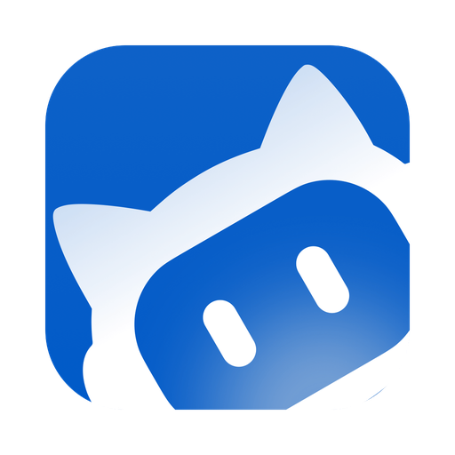

取消
确定
⌘
⚠️ 危险操作确认
总是允许
拒绝
允许一次
⚡ 控制台积分消耗
刷新
关闭

Orb 控制台
—
前台
原生
后台
只读
可写
完全
发送
设置
界面主题
星空·琥珀金
自然·青柠
极光·氤氲
动效
界面动效
动效 开
文字
A
A
字号
A
a
字体
预览
标题 · Orb 控制台
正文示例：把桌面上那份 PDF 的第 3 页导成图片。
辅助说明：Ctrl+Space 唤起面板
视觉模型 · 主力
看截图用的多模态模型
由「截图取词」和底部「视觉」路由使用，
必须支持图片输入
。
服务商
接口地址（OpenAI 兼容）
模型名
列出可用模型
API Key
粘贴
测主力
视觉模型 · 备选
主力失败时自动切换
要求和主力一样
支持图片输入
；留空则主力失败时不再降级。
服务商
接口地址
模型名
列出可用模型
API Key
粘贴
测备选
最大步数
语音识别
麦克风按钮的识别引擎
引擎
自动（本地离线优先，不可用回落浏览器）
浏览器内置（零配置，需联网）
OpenAI 兼容 Whisper 端点
识别接口地址
API Key
粘贴
模型名
测语音
本地离线识别（Whisper）
离线可用、免 Key
未安装时麦克风仍可用（走
浏览器引擎，需联网
）。一键安装含 Python 依赖（约 200 MB）+ small 权重（约 480 MB），只装到本机、不进安装包；装完可拔网识别。
检测中…
运算设备
自动（有 GPU 用 GPU，没有自动 CPU）
CPU（int8，最稳）
GPU（需已装 cuBLAS/cuDNN）
精度
自动（GPU float16 / CPU int8）
int8（CPU 推荐）
float16（GPU 推荐）
int8_float16（GPU 省显存）
安装本地离线识别（约 700 MB）
启动识别服务
危险操作拦截
命中就挂起等你点确认，60 秒不点自动拒绝
勾上的工具执行前会弹确认框。
建议保持默认只拦 PowerShell
。
急停
在顶栏的红色斜杠图标（或热键 Ctrl+Alt+Backspace），触发后中断所有自动化并卸下触发器，需手动恢复。
急停用于中断当前前台执行与录制，不影响已派发的后台任务。
前台通道
截图 / 点击 / 键盘，由 windows-mcp 提供
WorkBuddy 更新会清理
windows-mcp
的运行环境，导致前台通道失效。这里可一键重建。
检测中…
修复前台通道
后台 Agent（WorkBuddy CLI）
免 key，走 CLI 登录态
模型
热启动
常驻服务消冷启动；失败自动回落 -p
热启动 关
打开登录脚本
登录后才派得动后台任务
重新检测
首跑向导
四条通道的当前状态
首次启动会自动弹一次。这里可以随时再看一遍 ——
每张卡片的状态都是打开时当场查的
，改完配置回来看一眼就知道配没配对。
重看首跑向导
使用说明
完整说明见项目根目录的
使用说明.md
。
打开使用说明
在文件夹中显示
项目与更新
作者仓库在 GitHub
源码、问题反馈与新版本发布都在 GitHub 上 ——
两个按钮都用系统默认浏览器打开
，不会在面板里跳转。
打开 GitHub 仓库
查看最新版本
快捷键
唤起面板
Ctrl
Space
命令面板
Ctrl
K
划词工具条
Ctrl
Alt
S
送剪贴板
Ctrl
Alt
G
急停
Ctrl
Alt
Backspace
录制打点
F9
取消
保存
坐标以千分比（0-1000）返回，避免高分辨率下的坐标幻觉；模型可主动请求局部放大。 密钥仅保存在本机 .orbdata 下，不会发往除该接口之外的任何地方。
🧭 先看这四条通道
✕
有的开箱即用，有的必须你自己填 Key / 装 CLI。
下面每个状态标签都是打开时真查出来的，不是猜的。
四个状态每次打开都重新查一遍；改完配置可在「设置 → 关于」再打开一次。
重新检测
我知道了